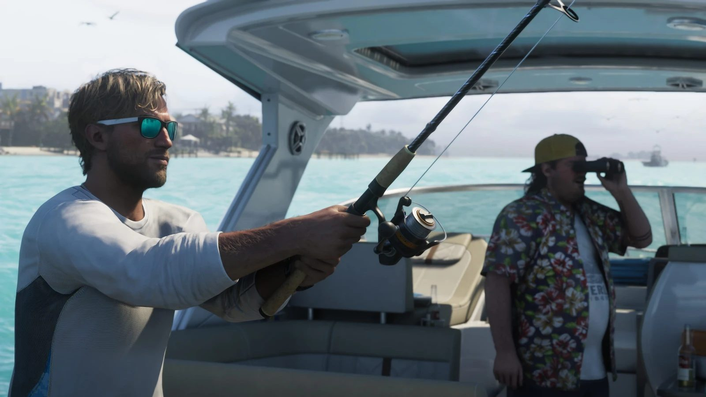

Mission 2 — Gone Fishing: Jason's first job

Mission facts
- Mission: 2nd story mission in Chapter 1, after the Prologue (Mission 1). (Reported)
- You play: Jason, with his friend Cal Hampton and pilot Donnie.
- Where: the sea off the Leonida Keys, a Kingfishers camp in Pelican Valley, Brian's Marina, and Jason's house in Key Lento.
- Quest giver: Cal — the mission starts immediately after the Prologue.
- Reward: Jason's house in Key Lento — your first safe house and base. (Reported by PowerPyx)
- What it teaches: boats, Focus Mode, stealth takedowns, fist fighting, healing with Zombix, and flying a seaplane.
Objectives, in order
- Follow the plane & collect the packages
- Search the camp for Donnie
- Find a way into the shack & untie Donnie
- Head to the plane
- Get in the seaplane
- Fly back to Brian's Marina
Walkthrough — step by step
1. Follow the plane and collect the packages. Jason and Cal start on a fishing boat, waiting for Donnie's call. Donnie flies over and drops packages into the sea. Drive the boat after the plane and slow down close to each package so Cal can hook it out of the water with his line — if you go too fast past a package, he cannot grab it. The packages are marked on the map. Press L3 and R3 to use Focus Mode: it highlights items, enemies and mission targets, and it works outside missions too.
2. Watch the meeting through binoculars. After the last package, Donnie flies to meet the Kingfishers, one of Leonida's gangs. Follow the pink line on the minimap to the swamps, then take out the binoculars from the weapon wheel and watch the deal on the docks. It goes wrong — the Kingfishers capture Donnie.
3. Sneak into the Kingfishers camp. Park the boat near the camp and go in on foot, alone. This is the part to take slowly: you start this section with only one weapon, and the camp is full of Kingfishers. Crouch (Circle / B) and use the tall grass on the right side of the camp to move unseen. Walk up behind an enemy, grab him (R2 / RT) and tap Square / X to knock him out quietly — gunfire brings the whole camp down on you. A hammer sits behind the shack if you want an extra melee weapon.
4. Free Donnie from the shack. Donnie is held in a building at the far end of the camp — go in through the unlocked front door and untie him. A large Kingfisher then jumps Jason: this is a fist fight, so strike with Square / X and block with X / A. Once he is down, pick up the Zombix — the game's healing item, used from the item wheel (hold L1 / LB and press Square / X). You can carry up to five, and convenience stores sell more.
5. Grab the trailer cash (optional, missable). On the way out, Donnie calls out that your cash is in a white-and-red trailer on the left. Go in, deal with the enemy who jumps out at you, and take the cash from the table. If you skip it, it is gone — guides note it also builds your "professional" reputation. (Reported by PowerPyx)
6. Run for the plane and fly out. You do not have to defeat every Kingfisher to finish — just reach the dock. Get in Donnie's seaplane, fly over the Keys for a short stretch, then head for the pink marker at Brian's Marina. Slow down and land on the water, then taxi in. A cutscene introduces Brian, who runs the smuggling operation — and owns the house Jason is about to get.
7. Drive Cal home, then go to Jason's house. After the cutscene, drive Cal to his house, then head to Jason's house in Key Lento and go inside. A call from Lucia ends the mission: she tells Jason she is getting out early. That sets up the rest of Chapter 1.
Tips before you start
- Go stealth in the camp. With one weapon and a camp full of enemies, quiet takedowns are far easier than a shootout — and stealth builds "professional" reputation. (Reported by PowerPyx; the reputation system is single-source Reported.)
- Use Focus Mode constantly. L3 + R3 highlights packages, enemies and the turbine you need to focus on near Donnie — it is the mission's main helper.
- Do not skip the trailer. The cash is the mission's one missable pickup, and it is right on your escape route.
- Learn the controls first. The boat, the stealth takedowns and the seaplane all use different buttons — our GTA 6 controls guide covers the new layout (sprint is now L3).
Fail conditions
No specific fail conditions for Gone Fishing have been confirmed in the walkthroughs checked so far. This section will be updated when they are — the usual mission-fail rules (Jason dying, Donnie dying, or losing the plane) are expected to apply, but we will not list them as facts until a guide confirms them.
FAQ
What is Mission 2 in GTA 6?
Gone Fishing, Jason's first playable mission. Jason and Cal follow pilot Donnie's plane by boat to collect dropped packages, then Jason rescues Donnie from a Kingfishers camp and flies the seaplane to Brian's Marina. (Reported by VGC and PowerPyx, checked 20 November 2026.)
What do you get for completing Gone Fishing in GTA 6?
Jason's house in Key Lento, which becomes his first base and safe house. You also get an optional cash pickup from a trailer at the Kingfishers camp if you grab it before leaving.
Should you go stealth or loud in Gone Fishing?
Stealth is strongly recommended: you start the camp section with only one weapon, and shooting alerts the whole camp. Crouch, grab enemies from behind and use the tall grass on the right side of the camp.
Previous: Mission 1 — The Opening: how Jason met Lucia. Next: Mission 3 — Gear Up: buy your first longarm. Back to all mission guides. New to the game? Start with what to do first in GTA 6.